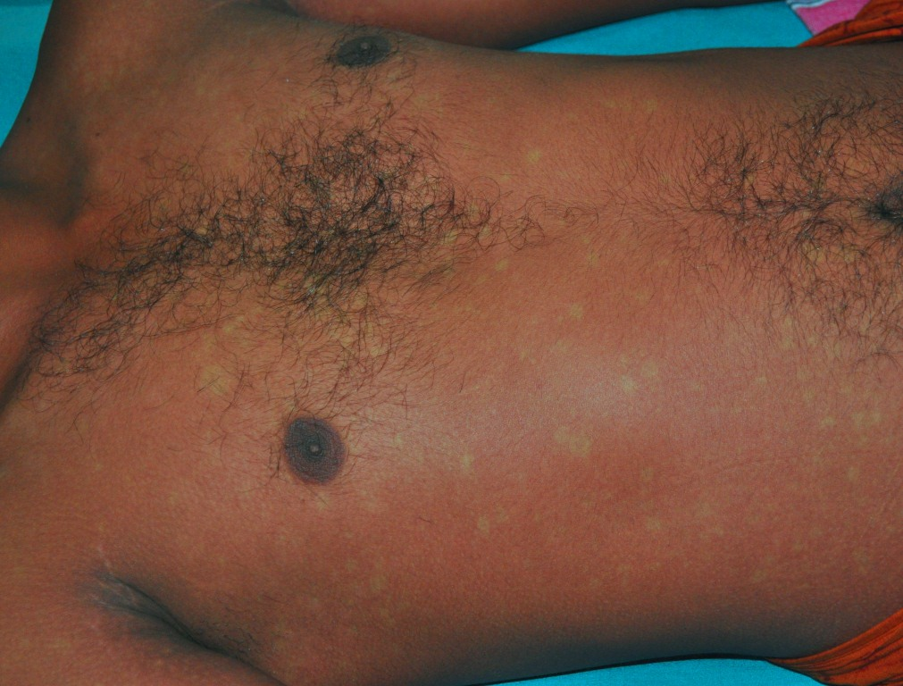

Dengue → GBS: as duas complicações
Homem, 35 anos, hígido. Dengue há duas semanas. Agora não deambula, tem fraqueza nos braços, diparesia facial e arreflexia global. LCR: 1 célula, proteína 150, glicose 70.
Aplicar tudo — etiologia, clínica, LCR e complicações — numa vignette completa de prova.
Vignette
Homem, 35 anos, previamente hígido, procura o pronto-socorro. Há duas semanas: febre alta, mialgia e dor retro-orbitária, com diagnóstico de dengue. Na semana seguinte, já sem os sintomas da dengue, surgiu fraqueza pelo corpo.
No dia da consulta: dificuldade para deambular por fraqueza e formigamento nos membros inferiores, além de fraqueza nos braços.
- Força grau 3 nos membros superiores e inferiores.
- Reflexos miotáticos profundos ausentes nos quatro membros.
- Sensibilidade vibratória diminuída distalmente nos membros inferiores.
- Paresia facial (diparesia no contexto de GBS).
- LCR: aspecto límpido e incolor; células 1/mm³; proteína 150; glicose 70.
Glicose 70 é normal (faixa didática citada: 70 a 90 de forma geral).
Montagem da hipótese
Quadro infeccioso/inflamatório prévio → fraqueza de membro inferior que sobe até a face → ausência de reflexos (2º neurônio) → dissociação proteico-citológica no LCR → Guillain-Barré.
A pergunta da banca
Assinale a alternativa com as duas complicações frequentes associadas à principal hipótese diagnóstica.
Resposta: insuficiência respiratória e desautonomias.
| Elemento | Dado |
|---|---|
| Idade/sexo | Homem 35 a, hígido |
| Gatilho | Dengue há 2 semanas |
| Clínica | Fraqueza + formigamento MMII + braços · força 3 · arreflexia 4M · vibratória ↓ distal · paresia facial |
| LCR | Células 1 · proteína 150 · glicose 70 · límpido |
| Complicações | IR + desautonomias |
Por que importa na prática: a banca não pergunta só o nome da doença — pergunta o que mata se você acertou o nome e errou a vigilância.
Resumo operacional: dengue → GBS (força 3, arreflexia, face, LCR 1/150/70) → vigiar respiração e autonômico.

Dengue recovery rash (“islands of white in a sea of red”) — Ranjan Premaratna, University of Kelaniya. Licensed under CC BY-SA 4.0. Source: https://commons.wikimedia.org/wiki/File:Dengue_recovery_rash_(White_islands_in_red_sea).jpg
O gatilho que a prova esconde na anamnese
Este rash convalescente de dengue é o dado que o enunciado entrega como "há duas semanas, febre alta, mialgia e dor retro-orbitária". A banca quer que você conecte: arbovirose → 1–3 semanas → polineuropatia aguda. O rash some, a fraqueza fica. E as duas complicações que matam — IR e desautonomias — são a pergunta seguinte.
Quiz
Q1. No homem de 35 a pós-dengue, o LCR (1 célula · proteína 150 · glicose 70) indica:
Q2. As duas complicações frequentes cobradas na vignette são:
Q3. Força grau 3 (MRC) significa, de forma operacional: